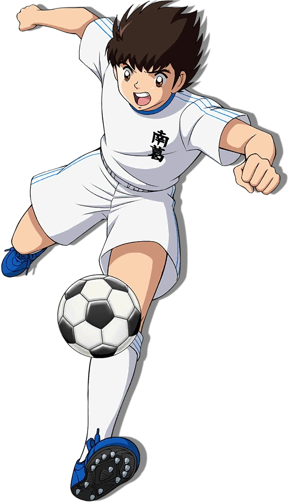

Bola Sepak

Dikutip Dari Wikipedia :
Sepak bola asosiasi (bahasa Inggris: Association Football atau Soccer) atau hanya sepak bola adalah salah satu cabang olahraga tim,
yang masing-masing pemainnya umumnya memainkan suatu bola khusus (yang disebut bola sepak) dengan kaki mereka di atas lapangan khusus.
Olahraga ini dimainkan oleh dua tim yang masing-masing beranggotakan 11 (sebelas) orang pemain inti dan beberapa pemain cadangan. Memasuki abad ke-21,
olahraga ini telah dimainkan oleh lebih dari 250 juta orang di 200 negara. Sepak bola bertujuan untuk mencetak gol sebanyak-banyaknya dengan memasukan bola ke gawang lawan.
Sepak bola dimainkan dalam lapangan terbuka yang berbentuk persegi panjang, di atas rumput atau rumput sintetis.